12. Molding and casting¶
Rework at Digiscope¶
On July 16th I’ve received help from the FabLab Digiscope in the Université Paris-Eclay Campus the instructor Jonah Marrs guided me thorught the week12 Molding and casting process with the Shopbot Desktop for milling, the milling bits usage, VCarve pro software for Gcode generation and the Smooth-on Mold max 29NV Silicone for making a mold.
The original plan was make a Chocolate mold but as the Silicone used is not Food safe contact I’ve determined to use it as a wax candle mold.
Equipment and materials¶
- Shopbot Desktop -
- 1/8 in Flat-end mill -
- 1/16 Ball-end mill -
- Silicon Mold Max 29NV -
- Scale
- Recipient for mixing -
- Globes
- Googles
- Tool for mill change -
Processing files¶
I’ve designed my model using Solidworks and exported the file as STL file format.
Then I’ve imported the STL file to Rhino to delete some surfaces, because Vcarve tried to mill all the wax brick and that could take a significant ammount of time, around 4 hours. Although I’ve committed a mistake by leaving the top surface.
The configuration of VCarve pro is as follows:

- Input the dimensions of the material in this case the wax brick dimensions are: - x: 3 inches - y: 7 inches - z: 1.5 inches
- Import the STL model we have created for 3D milling.
- Create the end milling tools we are going to use.
- Create a Rough milling process
- Create a surface finishing process
- Export the files as Shopbot opensbp format.
Calculating Spindle speed¶
For this process I’ve used as suggested by instructor Jonah the MIT spindle feed and speed calculator.
Input data:
- Diameter
- Surface speed of WAX.
Configuring the Shopbot desktop¶
The shopbot desktop machine has a frequency control for the rotor spin that needs to be changes every time the spin speed is changed. And as any other CNC machine the axis origins need to be calibrated manually using the jogging control. The tools need to be changed manually. Frequency for the milling process were 177HZ and 55 Hz.
Milling Wax mold¶
The GCODE files were exported in two parts:
- First part:
- Rough cut with 1/4 inch flat-end mill
-
Second Part:
- Surface finishing along X axis with 1/16 ball-end mill
- Surface finishing along Y axis with 1/16 ball-end mill
-
Fixing wax brick with hot glue
- Loading Files on shopbots UI.
- Inserting flat-end milling bit.
- Staring rough cut.
- Changing to ball-end milling bit.
- Chip sizes.
- Rough cut result.
- Finishing cut result.
Mixing the silicon¶
Datasheet for Mold Max 29NV Link
I’ve used the Smooth-on Mold max 29NV Silicone.
The mixing proportion is 10:1 in mass, the volume needed is around 72000 mm³ minus 19000 mm³ = 53000 mm³ the density of the material is 1.17 gram per cubic centimeter, the grams needed for the mold are: 62.01 of component A and 6 grams of component B.
- I’ve set the container as Zero reference in the balance and poor the silicon until reach 63.42 grams.
- Then I’ve poured 6 grams of part B.
- Finally, I’ve mixed with a stick both parts using this technique to avoid introducing too many air bubbles into the mix.

Pouring Silicon¶
I’ve cleaned the wax mold just by using the vacuum machine and then I’ve placed the mold in a flat leveled surface.
- Then I’ve started pouring the silicon into the milled cavity using This technique to avoid introducing air bubbles.
- I’ve stop until the cavity was filled.
The curing process takes about 6 hours at ambient temperature and I’ve translated the mold in a ziplock bag since I need to travel the next day.
- Ziplock bag
- Waiting for the bus
Demolding¶
I’ve demolded the silicon mold after 12 hours. I didn’t use any releasing agents.
Casting candles¶
After demolding the mold I’ve travelled and finished casting candles using the mold.
- I’ve melted the candle wax using boiling water bath method using one big pot filled of water and a small pot containing a small piece of wax candle.
- Piece of wax candle.

-
Additionally I’ve added a few drops of this wax to add color to the mix.
-
Molded candle still hot.
-
Demolding the casted candle.
Conclusions¶
This work has been made with the help of the Fablab Digiscope, instructor Jonah Marrs, Romain Di Vozzo, Selena Pere and Lea Paymal. Thanks for your support and kindness.
Casting candles with Smooth-on Mold max 29NV Silicone its quick and simple, the shopbot and VCARVE combination is super quick and easy to learn. I’ve made all this rework in only a few hours on a Friday, before traveling, and that’s why there are a lot o details missing on documentation and steps in the processes.
A Note about discrimination¶
discrimination noun [ U ] us /dɪˌskrɪm·əˈneɪ·ʃən/ discrimination noun [U] (WORSE TREATMENT) the treatment of a person or particular group of people differently, in a way that is worse than the way people are usually treated: Some immigrants were victims of discrimination. The law made racial discrimination in employment a serious crime. Discrimination is also prejudice against people and a refusal to give them their rights.
During my stance in the Fab Academy in AgriLab I was denied multiple times the right to being involved in the instruction,
The right of being listen with common respect,
The right to be treated like a equal and not being prejudged,
The right to use the machines and work freely with the same rights as the other students,
The right of not being disrespected in the work place by my culture, and language,
The right to learn from my instructors,
The right to have a voice to defend myself from false accusations,
The right of have a evaluation based on the quality of my work and not a personal point of view.
The right to know the right information on time and not just before.
The right to receive an instruction without anger or disgust.
The right to receive a fair evaluation and don’t being left behind on purpose making me wait one week for a “too compressed image in your documentation or a typo or a false “missing file” allegation.
It’s wasn’t just all the days with people not even saying good morning or ignoring me actively, or denying me specifically the instruction or even changing the code of a machine I was working on and saying nothing. Or ask for review and be told “yes today” and being ignored right after, or being treated “well” just in posts on Linkedin.
The last week in AgriLab I was denied the use of the machines and being told of being immature for speaking out about this issues with the coordination.
NO speak out loud about discrimination is the right thing to do.
Introduction¶
For this week we need to:
- Mill a mold using our available CNC machine.
- Cast an object using the milled mold.
- Test materials for the group assignment
Things I’ve learn so far:
- 3D modeling for molding.
- Process 3D CNC operations.
- Machining Wax bricks for molds.
- Calculate volume of material needed.
- Mix food-safe silicone.
- Cast silicon.
- Use the vacuum chamber.
Project:
- This is the rotor for my milk flow sensor.

3D design on Fusion¶
- Model inspired on this:
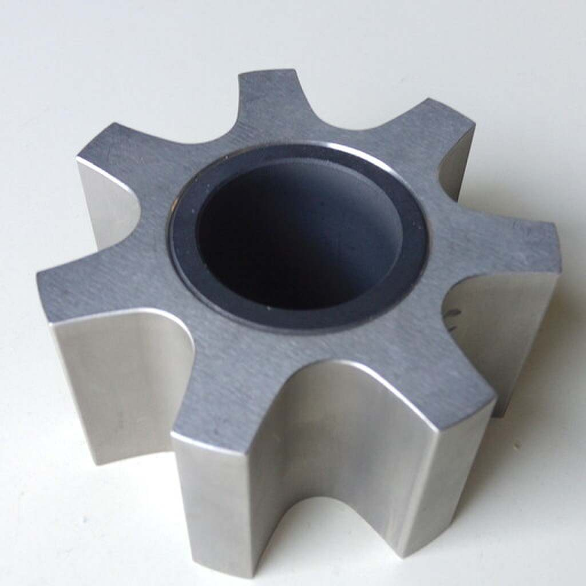
- And this 6 mm diameter x 50 mm long shaft I’ve found and cut in Agrilab.

Design¶
- Sketch.
- Diameter: 50mm
- Shaft hole diameter: 5mm
- Blades width: 6mm
- Round corners 3mm

- Cross section of the model extruded.
- I’ve made this by using revolve on a profile and then applying difference.
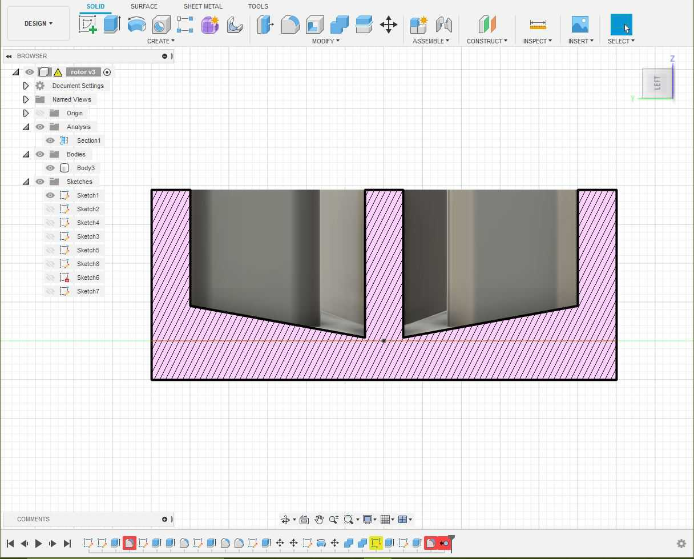
This is a video of my entire CAD design process:
Manufacturing¶
- I’ve placed thi origin in the corner shown in the capture.

- Rough cut.
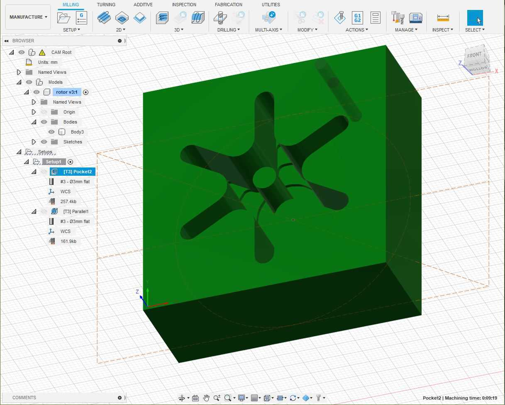
- Smoother cut.
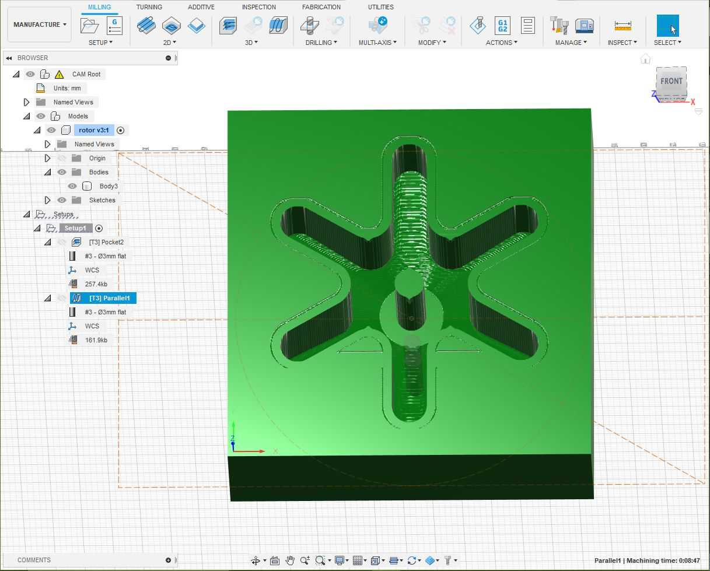
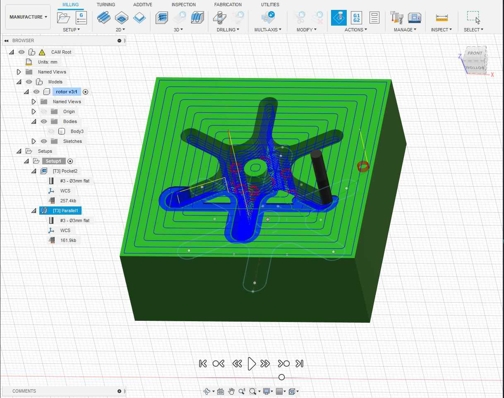
Tool configuration:
- Diameter: 3 mm
- Shaft diameter: 3 mm
- Overall length: 50 mm
- length bellow holder: 25 mm
- Shoulder length: 16 mm
- Flute length: 15 mm
- Tool number 3. (Just for current agrilab CNC machine tool configuration)
 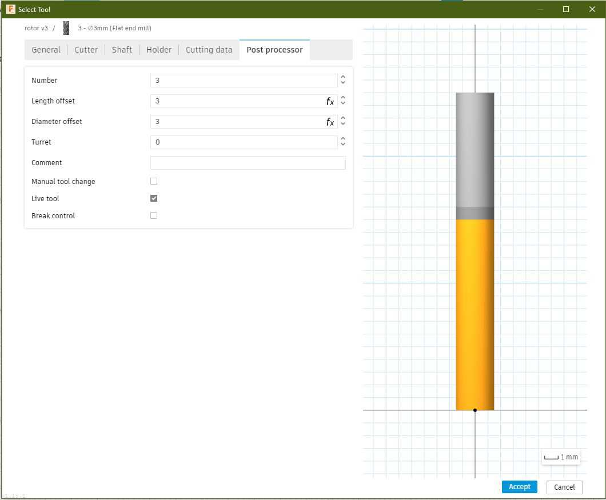
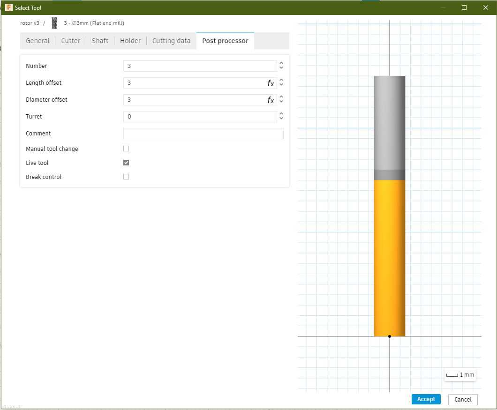
GCODE¶
- Delete line with G43 code. This adds 16 mm compensation to Z axis.
G43 Z16. H3
Preparation prior to Milling process¶
The milling process requires the Wax brick to be fixed to the CNC bed. But the WAX brick dimensions do not coincide with the pattern in the bed that holds pieces using the vacuum pump.
So, we had the task to design a holding tool, for that I’ve measure the CNC bed.
- I had the idea to make also taps for the vacuum holes of the CNC machine.
- The tap dimensions are 50 mm square and 4 mm radius in every corner.

- The lenght from rail to rail to use the holder pieces is 380 mm.
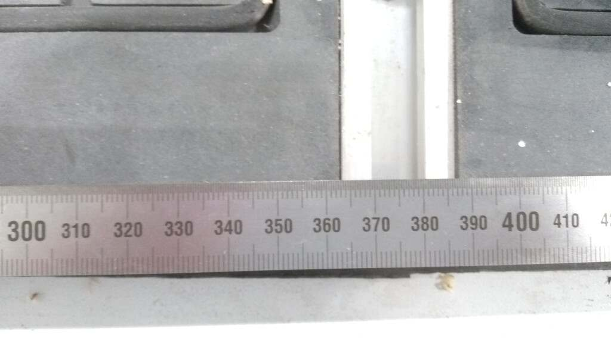
- The depth of the cuts in the CNC bed is 10 mm.

- The squares of the CNC bed pattern are 40 mm with a cut of 10 mm.

- These are the holder that are used to hold pieces in using the rails in the CNC bed.

Holder design¶
I’ve chose to design a holder device for the machinable wax bricks, using 6 mm MDF plates and the laser cutter.
Draw¶
Inkscape captures missing
Laser¶
FTP captures missing
Mold base¶
- This is the resulting piece, it holds steady in the CNC bed without the need of the vacuum pump.

- You can see here the small flexes that help the bricks to fit in place. All the bricks have slight 1-2mm differences in their dimensions.

- This is the brick placed in the holder.
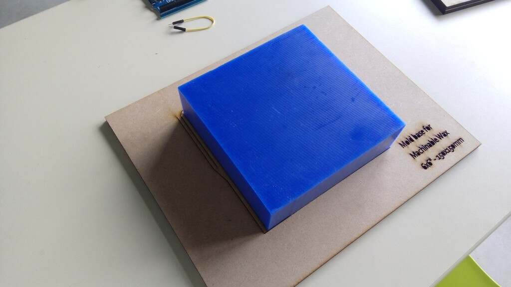

- Since I didn’t have time to finish my entire design for milling. In the milling day I’ve used Theo’s holder for the 75 x 176 x 37 mm Wax brick. So I’m saving my brick and holder for later.
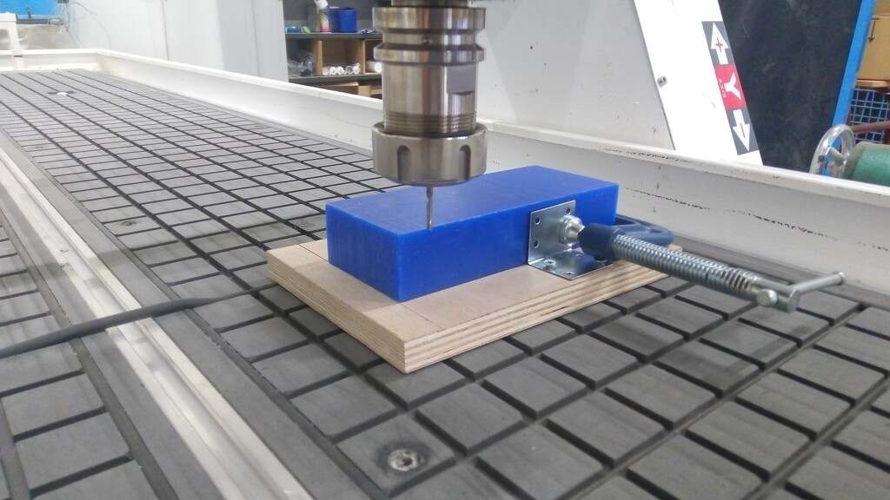
Milling¶
Process:
- 2D pocket cut (Rough cut)
- 3D parallel cut (Smoothing cut)
Mistakes during the process:
- At first my process didn’t include a 3D machining process.
- Generated the GCODE with the tool Number 1.
Solutions:
- Change the model adding angled spins to my design.
- Generate the GCODE with tool number 3 which in our CNC was the 3 mm Flat-end milling bit.
Pocket¶
- This is the rough process, the machine just cuts the silhouette as a 2D but it lefts scales and steps the later will be smoothed.


Parallel¶
- This is the smoothing process, the machine moves in along side the Z and X axis during this process.

- The resulting piece has a smoother surface.

Group assignment¶
For the group assignment I had the idea to make a sample table and cast some coins. For that I’ve used:
- 2 pieces of 6 mm MDF plate.
- Plastic sheet.
-
Laser cutter.
-
This is the sample table.

- Putting altogether the parts.

- I’ve also bring paper towels and globes for my team mates.

- I’ve cast a coin using Food-safe silicone, as Elina, but with the difference that I’ve used the vacuum pump to extract air bubbles from the mix.

- This is the result, the very small features were replicated perfectly in the mold.

Food-safe Silicone¶
-
This is the Food-safe silicone RTV polyaddition 3428 made by Esprit Composite.
-
It’s a two components silicone A 100 and B 10 by mass.
| Esprit composite | Food-safe Silicone |
|---|---|
| Datasheet | Link |
| Safety sheet | Link |
| Pot life | 90 mins @ 23 C |
| Demold time | 16 hours @ 23 C |
| Color | White |
| Mixing ratio | A:100g, B:10g MASS |
| Indentation hardness | 28 Shore A |
| Tensile strength | 7.5 MPa |
| Elongation | 600% |
| Tear strength | 20 KN/m |
| Viscosity | 25000 mPa |
| Shrinkage | 0.1% |
| Safety precautions | Not hazardous |
| Solubility | None |
I’ve found this information on English Stephane Muller’s Fab-Academy page
And in French in Esprit Composites web site.
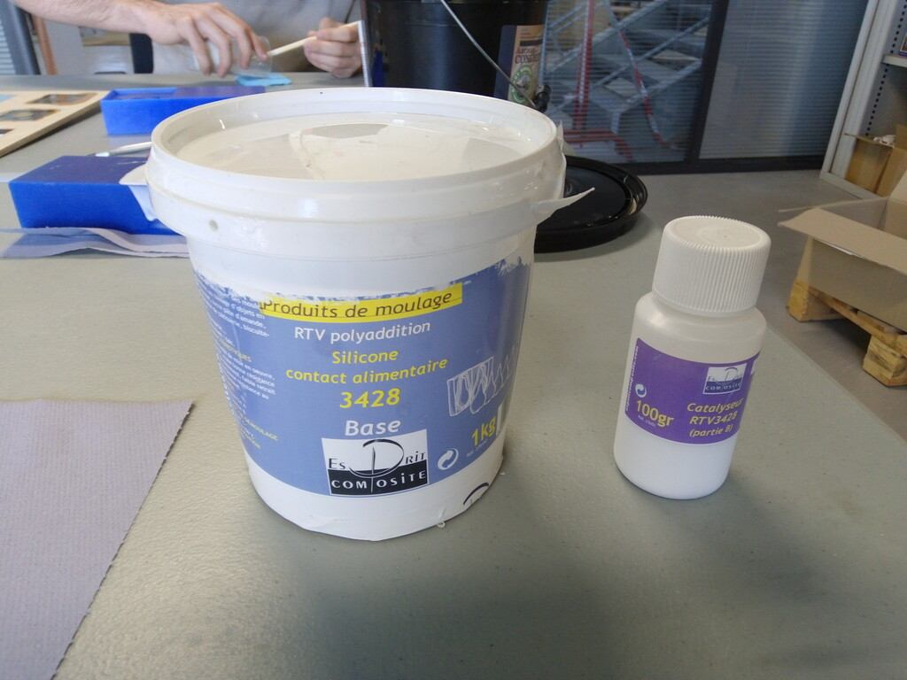
- I’ve used a disposable cup and a chopstick to mix the components.

- This the vacuum chamber and pump.

I’ve found two food-safe demolding agents:
- Petroleum jelly and,
- Sunflower seed oil.
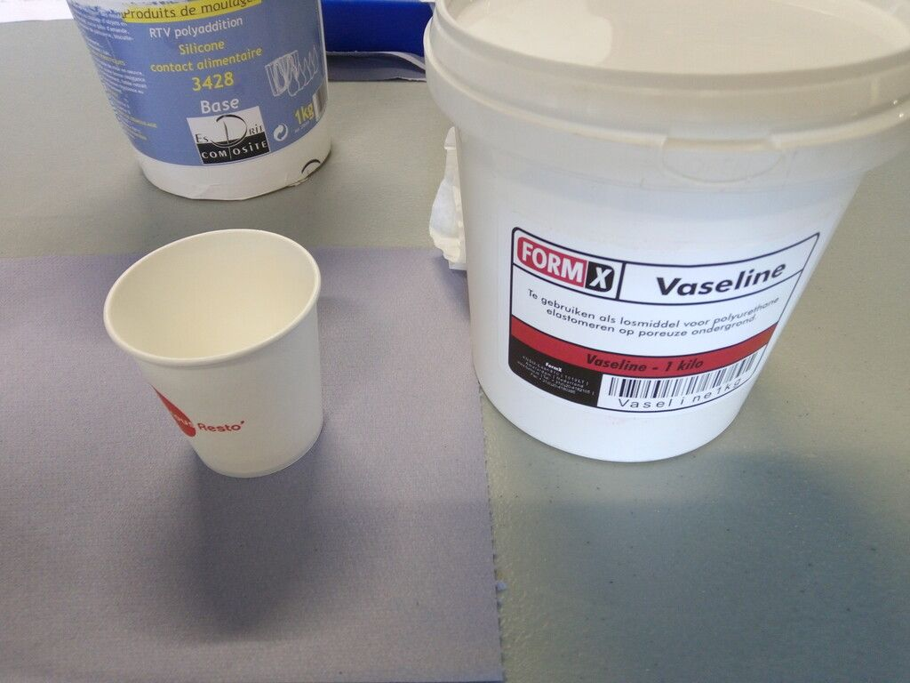
Silicone preparation¶
There are two important steps before preparing the mix.
- To know the volume need so by that avoid any excessive amount of silicone.
- To use a demolding agent and so help the silicone come out easily.
Volume¶
I’ve used water and the disposable plastic cup to estimate the volume needed of the mix. It’s important to remark that I still had to measure the mass of the volume to know the amount of the component B.
-
I’ve prepared also Theo’s Silicone for his food-safe silicone assignment. And this is the volume needed for him.
-
The top mark was the initial water level.
- The following mark is the current water level.

- The bottom mark is the water level after filling my mold.

- After over-estimating the residuals I’ve marked the level of MIX in the cup.

Mass¶
- I’ve weighted the empty cup and then used the Zero function in the balance. So the next grams measured will be only the weight of the components.

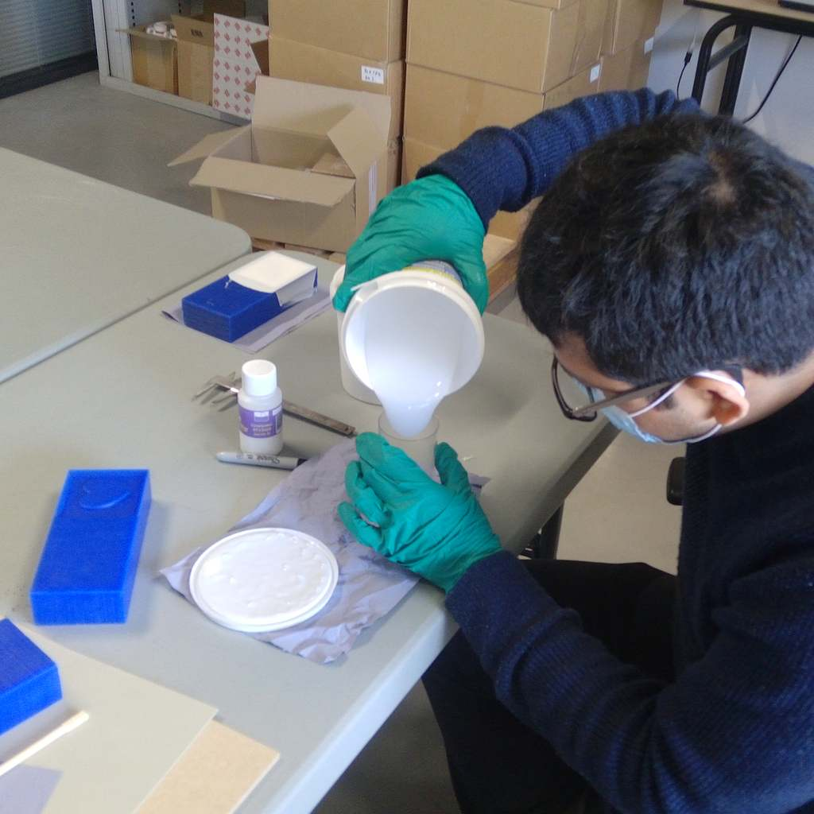
The component A and B weighted 97 g together 4 mm above to the level of the volume mark.
- 88 g Component A
- 9 g Component B

Mixing¶
I’ve used the chopstick to mix the components following the instructions of Professor Neil Gershenfeld to avoid filling the mix with air bubbles.
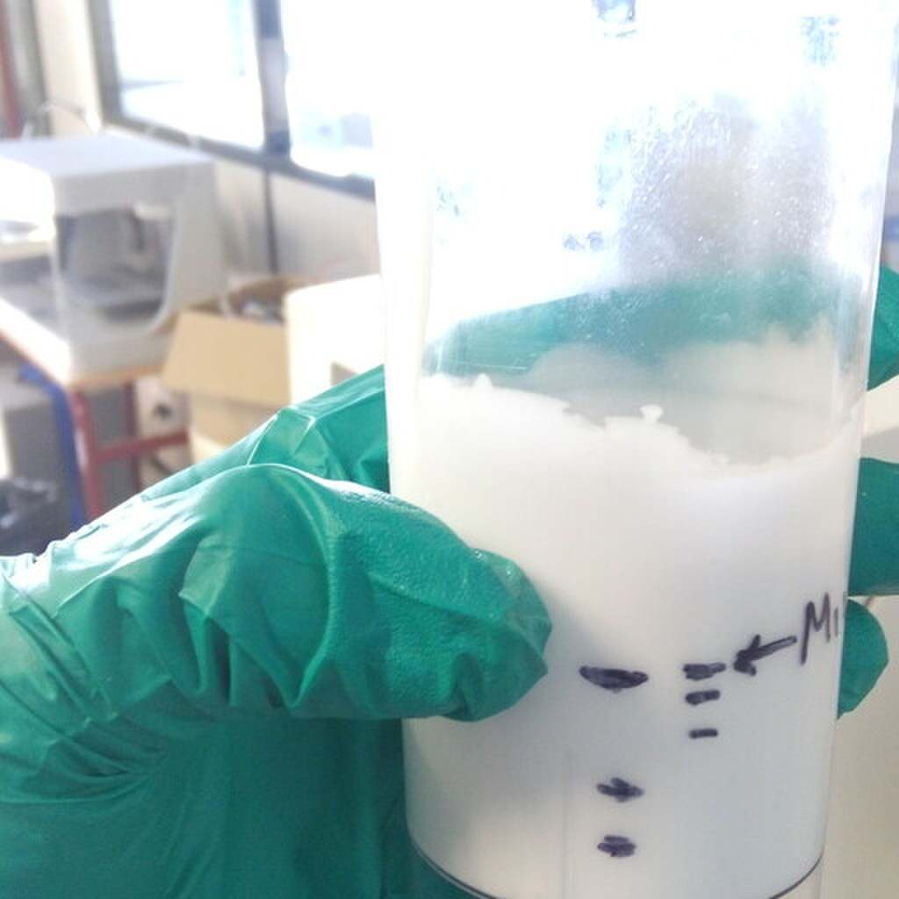
- This a sample of the movements I’ve used to mix the components.
Vacuum chamber¶
I’ve used the vacuum chamber to extract the air bubbles of the silicone Mix.
Parameters:
- Pressure: -1.5 MPa.
- Time: 10 mins.

- After releasing the vacuum.
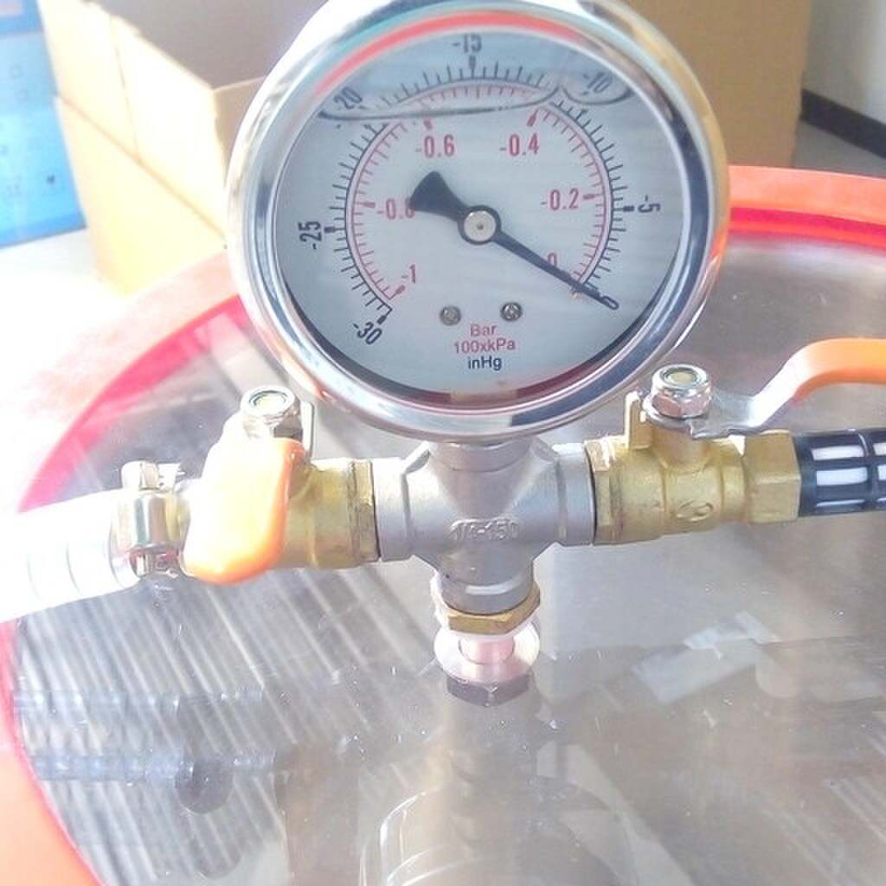
Casting¶
Demolding agent¶
-
I’ve chose Sunflower seed oil as demolding agent, following the instructions of the RTV3428 Silicone, it states that any agent should be food-safe as the silicone.
-
Coating the borders of the mold with the Sunflower oil using a coffee filter.
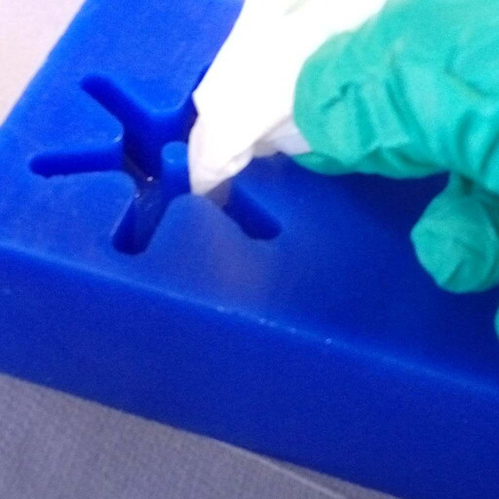
- Coating the inside of the mold pouring oil into the cavity.

- After realizing the excessive coat of oil I’ve placed the mold backwards to help ease the excessive oil out of the cavity.

Pouring¶
- Theo’s mold.

- My initial mold.

- A big mistake.
- I’ve chose to put some PLA wires I found out nearby with the idea to help me in the demolding process. Same for the Chopsticks.

-
I didn’t have the chance to record myself pouring the mix into the mold, but here I show out the technique I’ve used.
-
The idea is to make a small stream pouring into the mold to break any bubble in the mix.
- I’ve show to Theo the same technique.
Demolding¶
Remarks:
- The oil worked very good.
-
Next time I’ll not use any weird attachment, like I did with the chopsticks.
-
I’ve pour the silicone on Monday 11 am and cast off on Tuesday 11 am.

- The mold after removing the silicone part.

- The casted part.

- I’ve used a knife to cut the excess of material.

- After clearing the excess I’ve inserted the 6 mm shaft as planned. The hole in the silicone is 5 mm so it is tight and stable.

Extra¶
Casting bismuth¶
I’ve helped Theo’s with his test for soft metal casting.
- This is the setup of the pizza oven and a improvised table I’ve found in AgriLab.
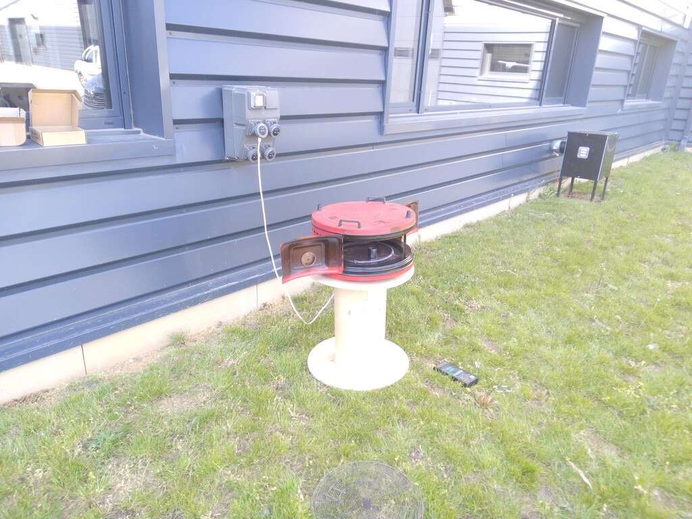
- The oven with the special container for molten metals.

- We used a K-type thermo-pair attached to the container using Kapton tape.
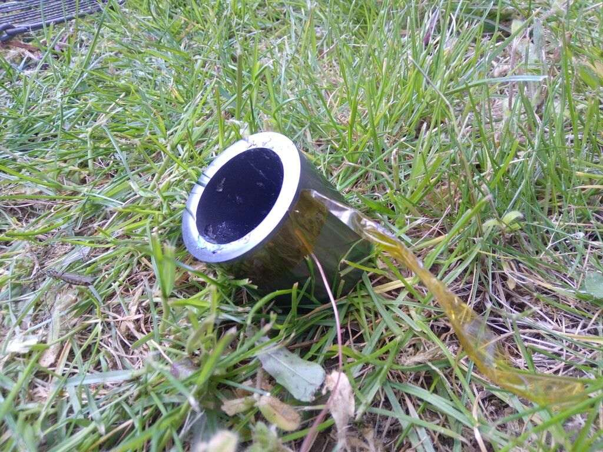
- Theo coated the mold with a thick layer of baby powder.
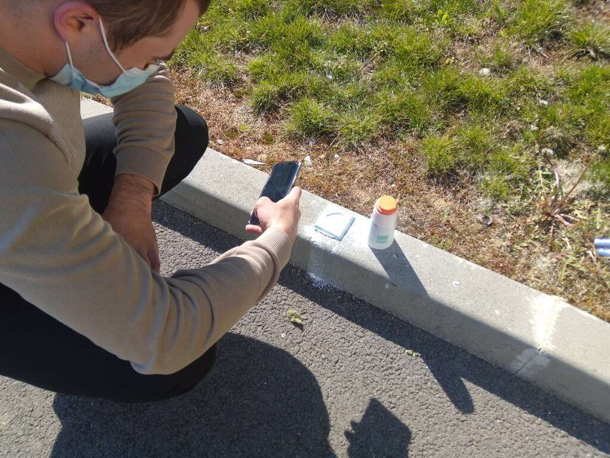
- This is Bismuth and his characteristic light reflective crystal structure.
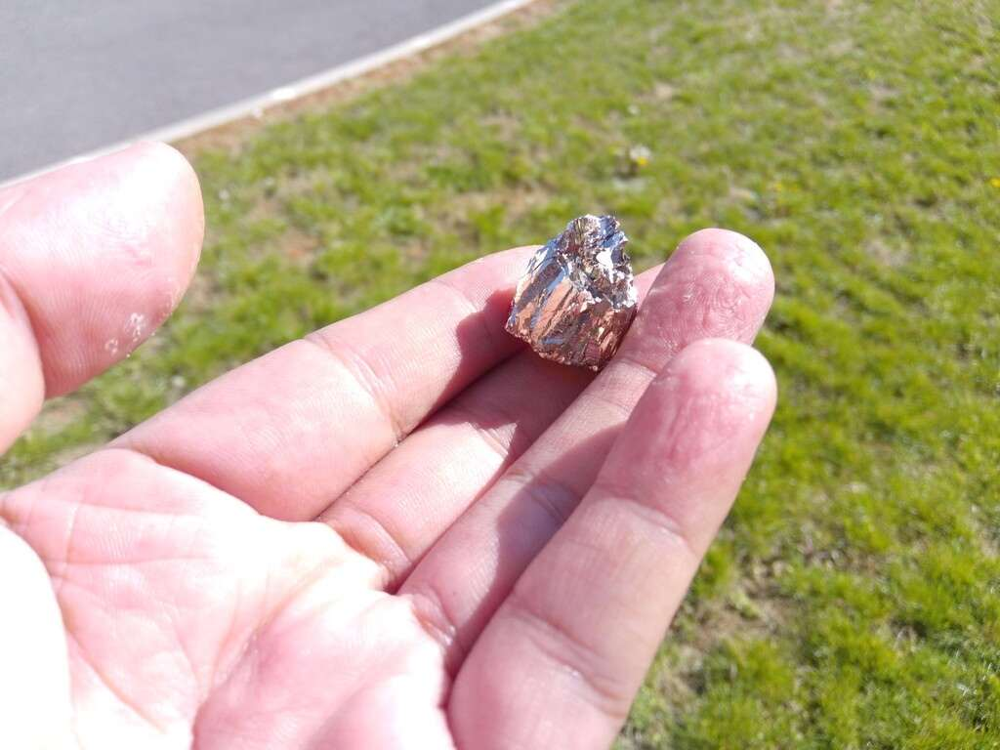
- This device is a XTC-Profiler a thermo-pair reader that we use in the Electro-Lab.

- This was Theo’s first attempt to cast Bismuth. The Bismuth got cold quickly, since the mold was 4 meters away from the oven. So the Bismuth didn’t flow on the mold.


- This is a video of a second attempt performed by our instructor Luc
- This is Theo’s third and successful attempt to cast the Bismuth into the mold.


- Final cast piece.

| Data | casting Bismuth |
|---|---|
| Oven max Temp | 290 C |
| Time of practice | 46 mins |
| Time to reach 280 C | 26 mins |
| Attempts until success | 3 |
Conclusion¶
- Silicone RTV3428 it’s really easy to use.
- The viscosity was perfect to replicate all the features of the design.
- I’d like to use a cap for the top of my design, or a two parts mold.
- I’d keep using this material for my next sensor parts.
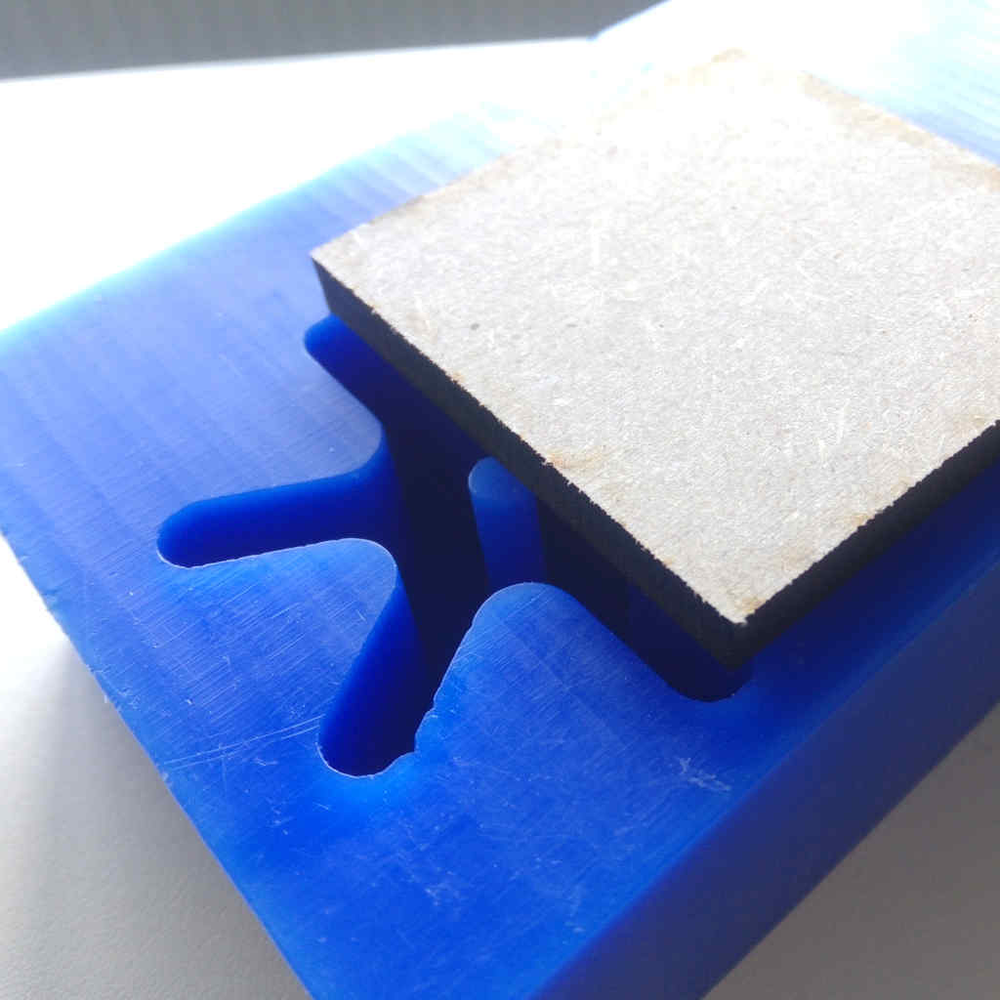
Design changes
- Design a mold that covers or embeds the shaft to avoid direct contact with the milk and the metal.

Future projects¶
I’ve the idea to cast the entire body of my flow sensor, but since it’s the first time for me using Food-safe materials I’ll wait until finish my design properly.
Rework for global review (AgriLab)¶
I’ve started to prepare a molded version of the buttons I’ve designed for my final project.
My time will be managed like this:
| Task | Date |
|---|---|
| Milling mold base | 13/07 |
| Pouring silicone on wax mold | 13/07 |
| Casting on silicone mold | 14/07 |
Files¶
| Original design | File |
|---|---|
| 3D Model SOLIDWORKS | 3D model |
| Roland Modela 4 project file | project for toolpath |
| Requirement | File |
|---|---|
| 3D Model STL | stl model |
| Milling path Rough | Made with Roland Modela 4 |
| Milling path finishing | Made with Roland Modela 4 |
Software Install¶
For this rework I’ve chose to use Solidworks for modeling, and Roland MODELA v4 to generate the toolpaths for the machining. I’m using a version of the buttons I’ve designed for my final project.
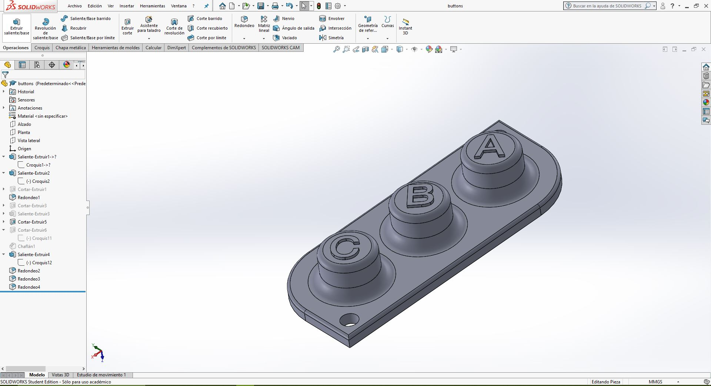
To install Roland Modela I’ve used the links on the documentation of Yuichi Tamiya my global instructor.
Software to install:
- Modela player 4.
- Virtual Modela.
Download Links on Google Drive
Configuration¶
Once Roland Modela 4 its installed we can start using it, since this is a windows program I’ve to switch to Windows OS to use it.
- Add Roland SRM-20 as the main machine. - 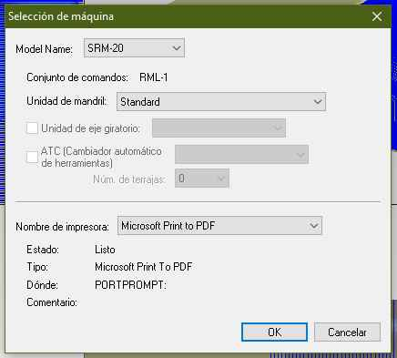
- Add a new tool: I’ll add the 1mm flat-head milling bit we use for cutting PCBs.
-

- Import the STL model. - 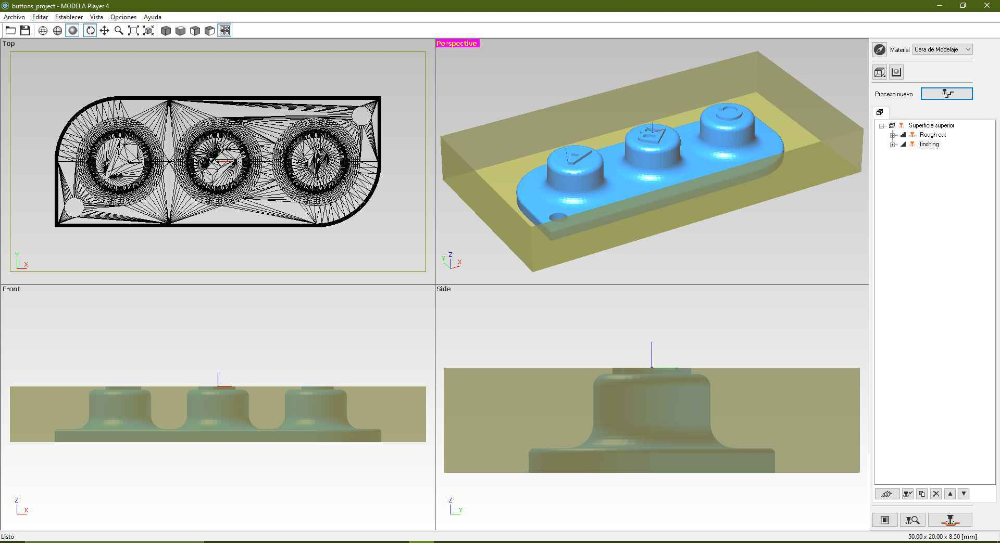
- Add process:
- 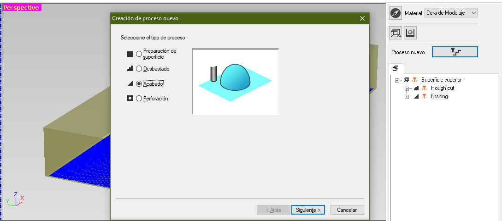)
- 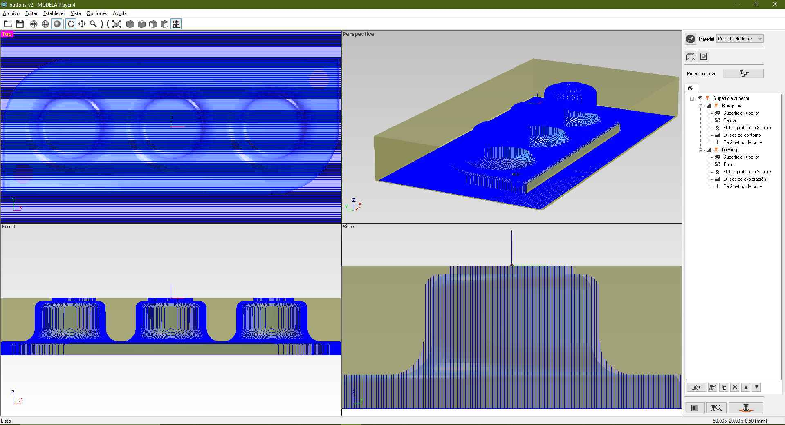)
- 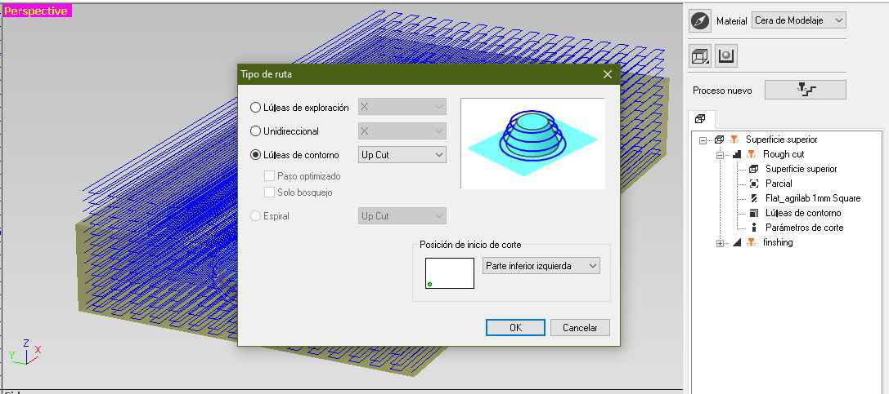)
-
 )
- 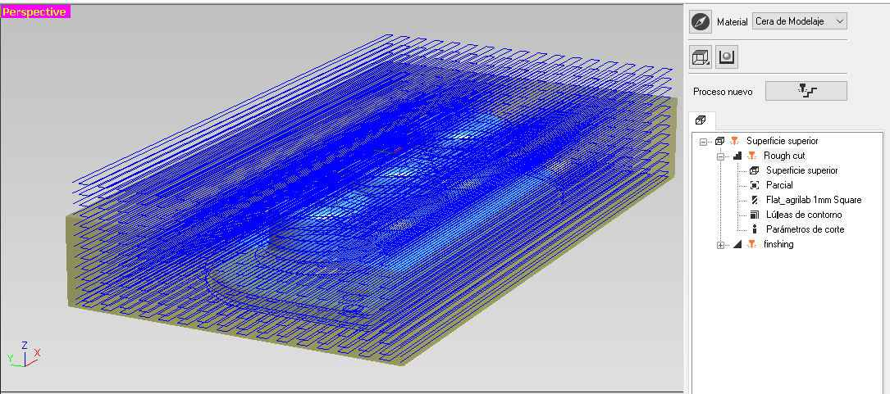)
)
- 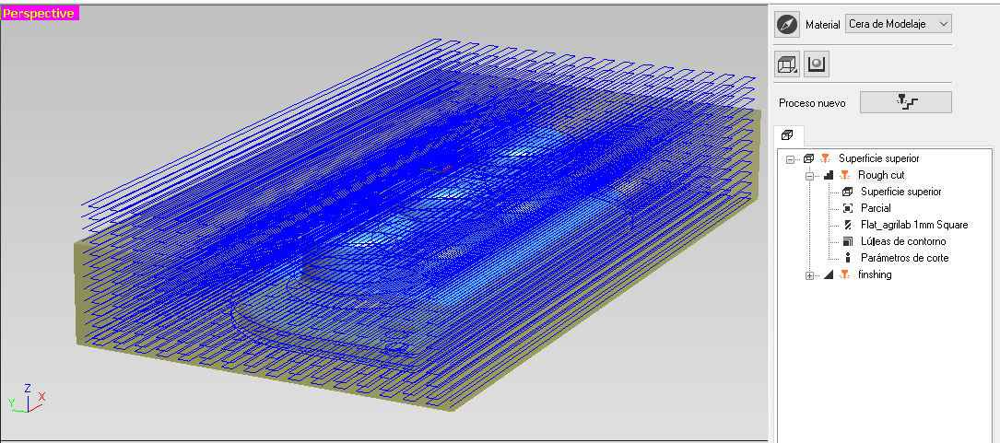) - Rought cut:
- 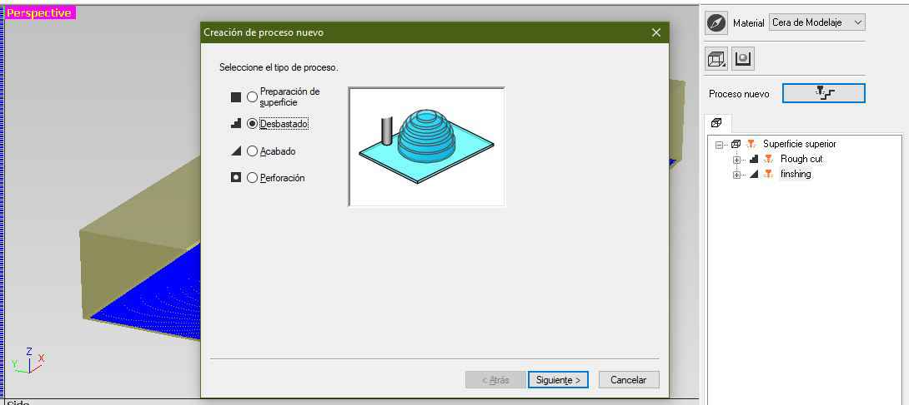
- 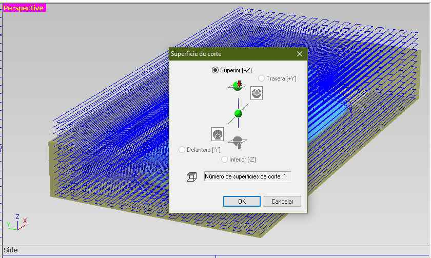
-

- Finishing:
-
 - 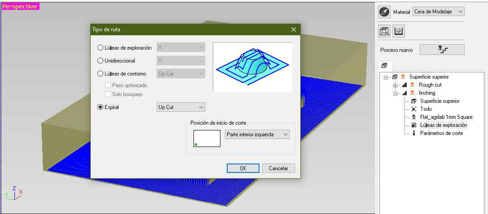
-
- 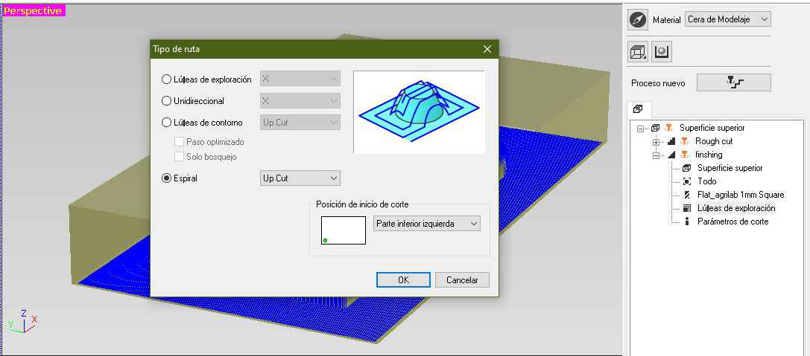
- 
- Simulation with virtual Modela software:
-
 -
-  - 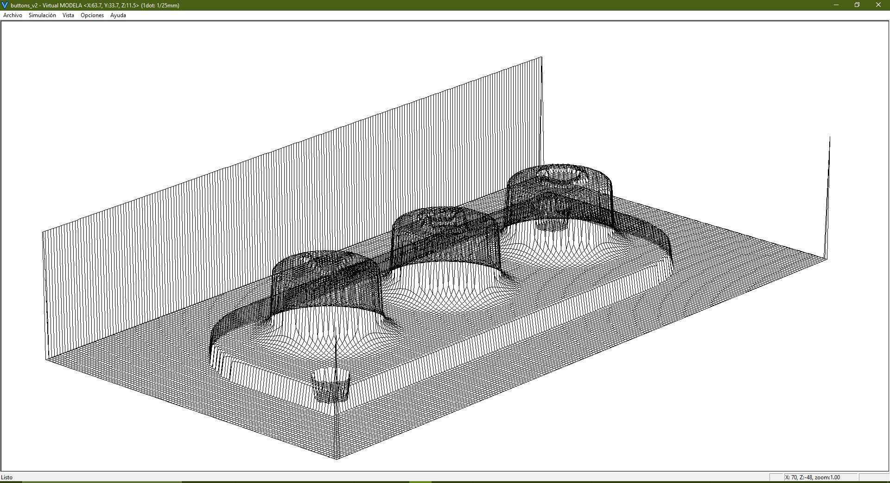
- 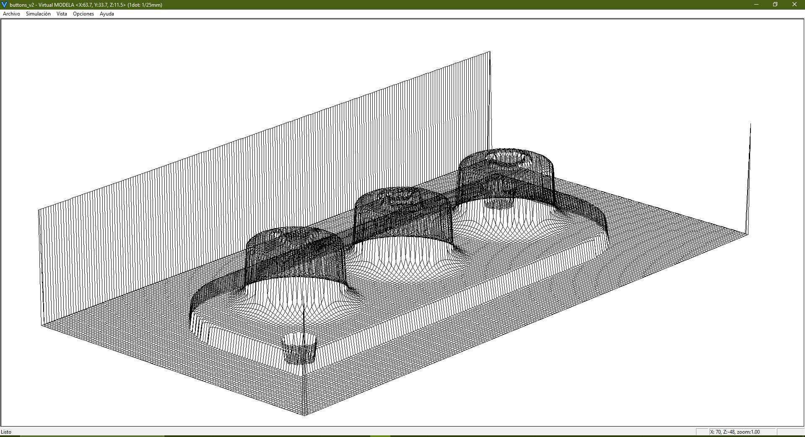
Rework at Digiscope¶
On July 16th I’ve received help from the FabLab Digiscope in the Université Paris-Eclay Campus the instructor Jonah Marrs guided me thorught the week12 Molding and casting process with the Shopbot Desktop for milling, the milling bits usage, VCarve pro software for Gcode generation and the Smooth-on Mold max 29NV Silicone for making a mold.
The original plan was make a Chocolate mold but as the Silicone used is not Food safe contact I’ve determined to use it as a wax candle mold.
Equipment and materials¶
- Shopbot Desktop -
- 1/8 in Flat-end mill -
- 1/16 Ball-end mill -
- Silicon Mold Max 29NV -
- Scale
- Recipient for mixing -
- Globes
- Googles
- Tool for mill change -
Processing files¶
I’ve designed my model using Solidworks and exported the file as STL file format.

Then I’ve imported the STL file to Rhino to delete some surfaces, because Vcarve tried to mill all the wax brick and that could take a significant ammount of time, around 4 hours. Although I’ve committed a mistake by leaving the top surface.

The configuration of VCarve pro is as follows:
- Input the dimensions of the material in this case the wax brick dimensions are: - x: 3 inches - y: 7 inches - z: 1.5 inches
- Import the STL model we have created for 3D milling.
- Create the end milling tools we are going to use.
- Create a Rough milling process
- Create a surface finishing process
- Export the files as Shopbot opensbp format.
Calculating Spindle speed¶
For this process I’ve used as suggested by instructor Jonah the MIT spindle feed and speed calculator.
Input data:
- Diameter
- Surface speed of WAX.
- etc.

Configuring the Shopbot desktop¶
The shopbot desktop machine has a frequency control for the rotor spin that needs to be changes every time the spin speed is changed. And as any other CNC machine the axis origins need to be calibrated manually using the jogging control. The tools need to be changed manually. Frequency for the milling process were 177HZ and 55 Hz.
Milling Wax mold¶
The GCODE files were exported in two parts:
- First part:
- Rough cut with 1/4 inch flat-end mill
-
Second Part:
- Surface finishing along X axis with 1/16 ball-end mill
- Surface finishing along Y axis with 1/16 ball-end mill
-
Fixing wax brick with hot glue
- Loading Files on shopbots UI.
- Inserting flat-end milling bit.
- Staring rough cut.
- Changing to ball-end milling bit.
- Chip sizes.
- Rough cut result.
- Finishing cut result.
Mixing the silicon¶
Datasheet for Mold Max 29NV Link
I’ve used the Smooth-on Mold max 29NV Silicone.
The mixing proportion is 10:1 in mass, the volume needed is around 72000 mm³ minus 19000 mm³ = 53000 mm³ the density of the material is 1.17 gram per cubic centimeter, the grams needed for the mold are: 62.01 of component A and 6 grams of component B.
- I’ve set the container as Zero reference in the balance and poor the silicon until reach 63.42 grams.
- Then I’ve poured 6 grams of part B.
- Finally, I’ve mixed with a stick both parts using this technique to avoid introducing too many air bubbles into the mix.
Pouring Silicon¶
I’ve cleaned the wax mold just by using the vacuum machine and then I’ve placed the mold in a flat leveled surface.
- Then I’ve started pouring the silicon into the milled cavity using This technique to avoid introducing air bubbles.
- I’ve stop until the cavity was filled.
The curing process takes about 6 hours at ambient temperature and I’ve translated the mold in a ziplock bag since I need to travel the next day.
- Ziplock bag
- Waiting for the bus
Demolding¶
I’ve demolded the silicon mold after 12 hours. I didn’t use any releasing agents.
)
Casting candles¶
After demolding the mold I’ve travelled and finished casting candles using the mold.
- I’ve melted the candle wax using boiling water bath method using one big pot filled of water and a small pot containing a small piece of wax candle.
- Piece of wax candle.
-
Additionally I’ve added a few drops of this wax to add color to the mix.
-
Molded candle still hot.
-
Demolding the casted candle.
Conclusions¶
This work has been made with the help of the Fablab Digiscope, instructor Jonah Marrs, Romain Di Vozzo, Selena Pere and Lea Paymal. Thanks for your support and kindness.
Casting candles with Smooth-on Mold max 29NV Silicone its quick and simple, the shopbot and VCARVE combination is super quick and easy to learn. I’ve made all this rework in only a few hours on a Friday, before traveling, and that’s why there are a lot o details missing on documentation and steps in the processes.
Files¶
Final files¶
Past files¶
NC Rotor Rough Pocket process file.
NC Rotor Smoother Parallel process file.
Inkscape laser mold base file for 6x6 inches Wax brick
{kind=link}
Fusion 360 Rotor design and manufacturing file